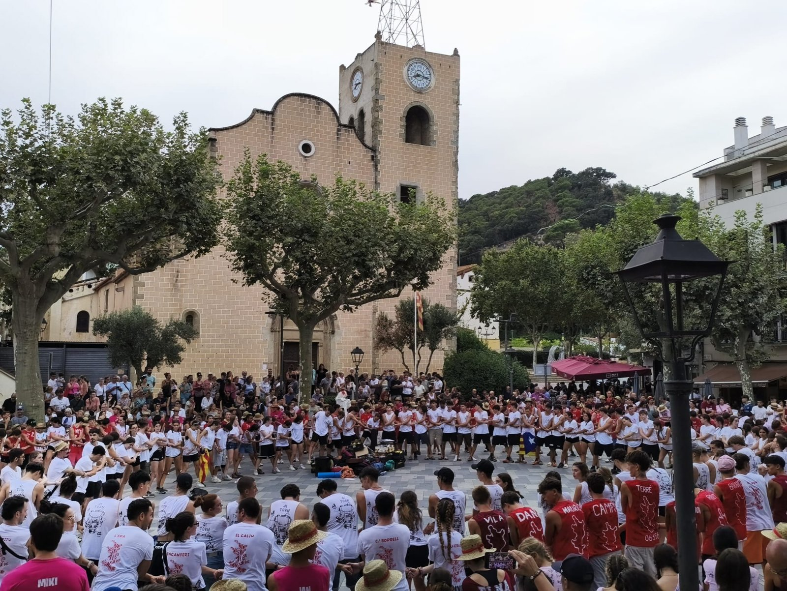

1r
Primer torn
4t i 5è de Primària
Cada any, de l'1 al 10 d'agost, centenars d'infants i joves d'Arenys de Munt marxen de colònies. Quatre torns i una gran família de voluntaris que ho fa possible.

Sortim l'1 d'agost. Ja tens la motxilla a punt?
Normalment s'obren entre febrer i març. Ho anunciarem aquí, per correu a les famílies i a Instagram.
Cada torn té la seva casa, el seu equip de monitors i la seva cuina. Comencem a 4t de Primària i arribem fins a 1r de Batxillerat.
4t i 5è de Primària
6è de Primària i 1r d'ESO
2n i 3r d'ESO
4t d'ESO i 1r de Batxillerat

Les diapos de l'estiu, el 24 d'octubre a la Sala Municipal, amb sessions a les 17 h i a les 19 h.
Llegeix-ne més →Els podcasts de cada torn a Ràdio Arenys de Munt, del 3 al 9 d'agost.
Llegeix-ne més →
Vuit autocars plens i el 2n torn fent a peu la primera etapa.
Llegeix-ne més →Dades de l'infant i comprovant de la paga i senyal de 50 €.
Venda de flors per al Dia de la Mare a la plaça de l'Església.
Col·labora amb les KTAl Centre Moral: entrega de documents i reunió informativa per a famílies.
Horaris, contactes, activitats, menús i què cal portar.
Deu dies, quatre torns, quatre cases.
Les fotos i diapos de tots els torns, a Arenys de Munt.
Col·labora amb les KTLa quina nadalenca de les KT, a la Sala Municipal.
Col·labora amb les KTDesprés de les campanades, la barra de les KT a la plaça de l'Església.
Col·labora amb les KTLes KT FLORS, les KT FOTOS, la KT QUINA i la BARRA DE CAP D'ANY són activitats per col·laborar amb les colònies: el que s'hi recull ajuda a fer-les possibles.
Instagram és el canal més ràpid per saber quan s'obren les preinscripcions, recordatoris i novetats durant les colònies.